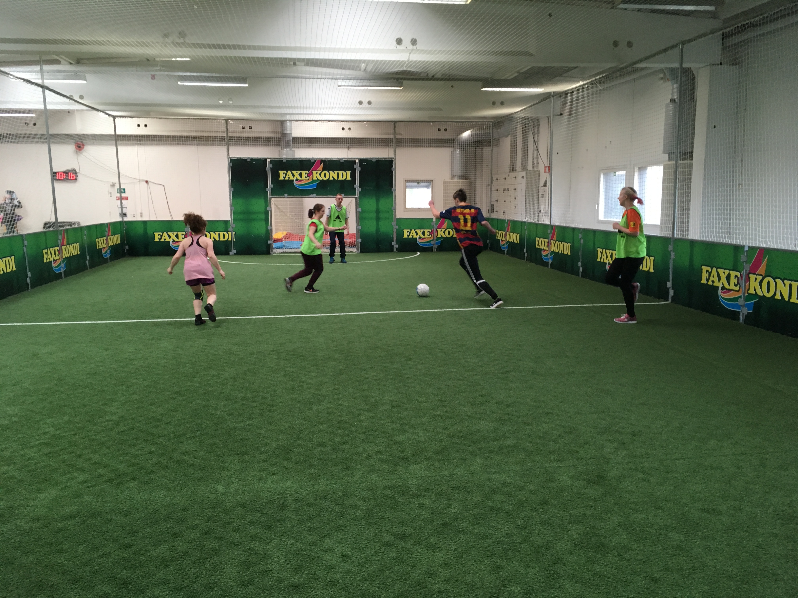
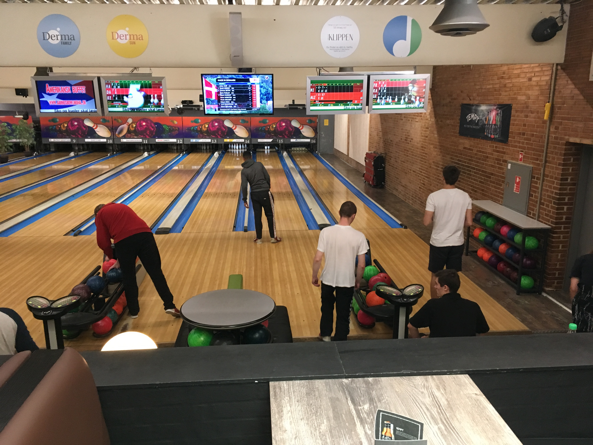
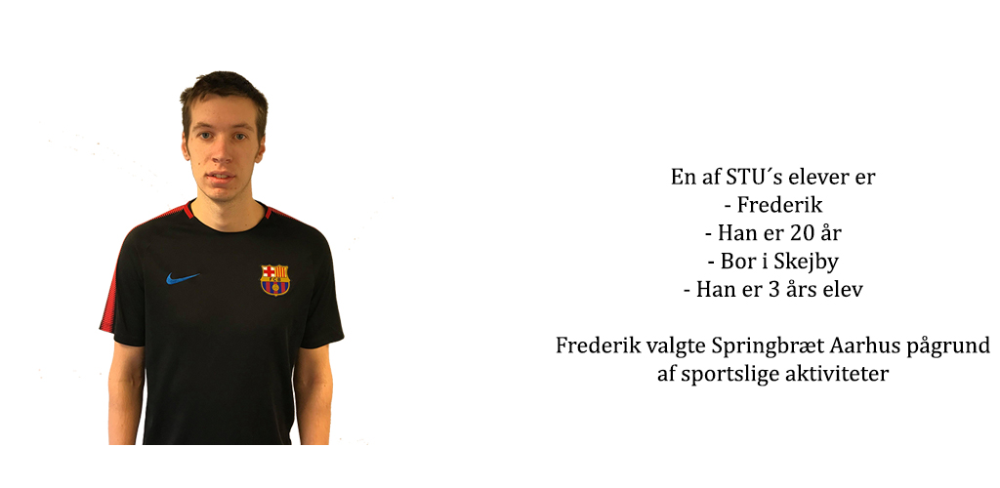

1 / 3

Fodbold
2 / 3
.jpg)
Badminton
3 / 3

Bowling
Hvad er STU?
STU står for Særligt Tilrettelagt Ungdomsuddannelse.
STU er en treårig ungdomsuddannelse, målrettet den unge der ikke har mulighed for at gennemføre en anden ungdoms- eller voksenuddannelse. Målgruppen for STU er unge med afsluttet folkeskole og frem til det 25. år.
Formålet med en STU er, at du opnår personlige, sociale og faglige kompetencer til en så selvstændig og aktiv deltagelse i voksenlivet som muligt og eventuelt til videre uddannelse og beskæftigelse.
Som STU elev hos Springbræt Aarhus er du med til at forme din uddannelse efter de drømme og ønsker du har for din fremtid.

Vi holder nemlig meget af bevægelse, og vi vil gerne holde os nogenlunde sunde og i en god form. Det betyder ikke, at vi er elitesportsfolk; men vi ved, at sundhed og bevægelse giver os de bedste muligheder for at få noget godt ud af vores liv.
Vi ved også, at det er vigtigt at have noget at stå op til hver dag.
Derfor arbejder vi benhårdt på at skaffe praktikpladser og forskellige jobs til elever på Springbræt Aarhus STU.
Det vigtigste for de ansatte er at de kan se en positiv udvikling for den enkelte elev. Det er med til at skabe en værdi, ikke bare for eleverne men også for underviserne og deres hverdag
Hver dag skal gerne være en glæde. Det bliver den, når vi har det rart sammen og når vi laver noget, der er sjovt og meningsfuldt. Sundhed er en blanding af mange ting, såsom sund kost, bevægelse, livskvalitet, selvtillid og mange flere. Vi ønsker at kombinere glæde og sundhed i det omfang, der passer til hver enkelt.